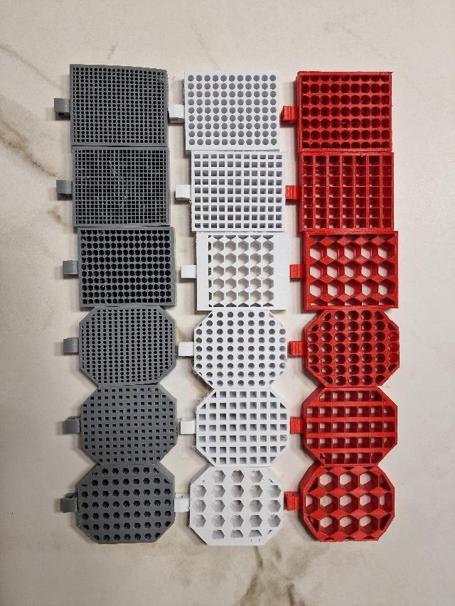

Plan before committing.
I spend time defining the problem, identifying constraints, and checking assumptions before treating a concept as a solution.
I’m Jan Kazimierczak, a second-year Engineering Science student at the University of Toronto, Class of 2029 + PEY. My focus is aerospace engineering, with an emphasis on careful planning, technical analysis, hands-on testing, and direct communication about what did and did not work.



My interest in engineering began around age 13 with the first Falcon Heavy launch. Watching both boosters land with precision made engineering feel tangible: careful reasoning could produce something difficult, coordinated, and real.
The work documented here is smaller in scale, but it reflects the same attraction to systems where analysis, design choices, physical constraints, software behavior, and testing have to agree.
I’m a member of UTAT’s Liquid Propulsion team, working on regenerative cooling for UTAT’s liquid engine.
My broader propulsion interests include chamber and nozzle design, injector design, and ignition systems.
I spend time defining the problem, identifying constraints, and checking assumptions before treating a concept as a solution.
When a method appears unsafe, weak, or insufficiently supported, I believe the concern should be voiced and investigated.
Team decisions benefit from different perspectives, but the reasons, uncertainties, and sacrifices behind a decision should remain visible.
The tools and methods I use, with examples from the projects in this portfolio.
Python supported rapid bridge-design iteration and train-position simulation. MATLAB processed and visualized proxy-test data for BikePack Buddy.
The screw-sorting project documents CAD concept development and the selection of feeder, head-classification, and length-sorting subsystems.
A Raspberry Pi camera system and CNN classifier were tested for screw-head classification, with the reported accuracy and shortfall kept explicit.
Across the case studies, design decisions were examined through calculations, low-fidelity prototypes, subsystem prototypes, fabrication, and physical tests.
The grid-fin study connects load-cell instrumentation and Arduino acquisition to a Python-to-CSV workflow, R visualizations, ANOVA, and Tukey HSD follow-up.
Bachelor of Applied Science in Engineering Science · Class of 2029 + PEY
Course-based engineering design, structural analysis, physical prototyping, and documented technical reflection.
The project pages contain the technical depth; email and professional profiles are collected on the contact page.